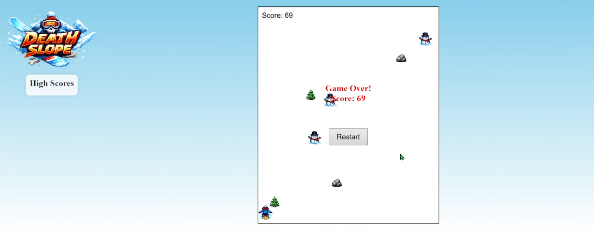
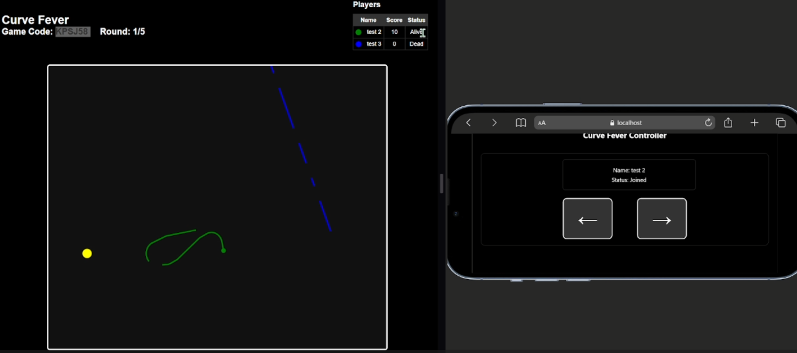
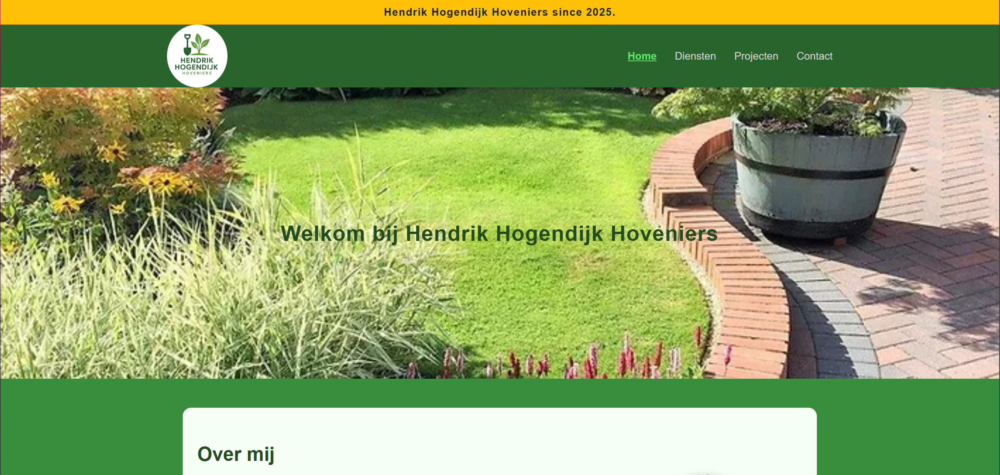
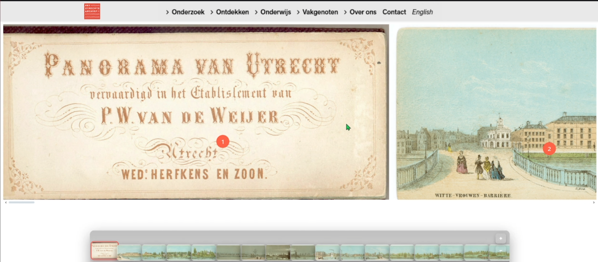

02 — Alle Projecten
Mijn werk

05
06Remote Controller
Bij deze opdracht moesten we met een websocket ervoor zorgen dat jouw telefoon een bestuur apparaat kon zijn voor iets op jouw laptop dan kon een game zijn kon ook een app zijn.Ik heb uiteindelijk gekozen voor een muziek player waarbij je via je telefoon nummers kunt opzoeken en afspelen op je laptop.gekozen dat het een game controller werd voor de game die op je laptop afspeelt.

07
06UtrechtsArchief
Bij Deze opdracht die we hebben gekregen van het Utrechtsarchief moesten we een website voor hun bouwen. Het was de bedoeling dat we een Pannorama moesten maken van een hele lange afbeelding in het archief zodat bezoekers de afbeelding beter konden bekijken en informatie erover te krijgen.